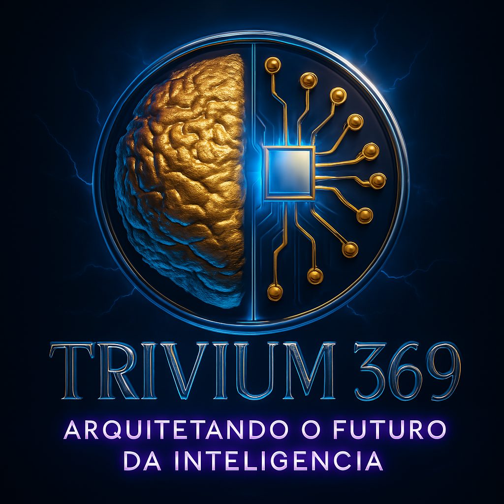

A ESCOLHA
Operador de IA vs. Arquiteto da Cognição

99% dos profissionais usam a IA como um Google melhorado.
O resultado?
A Comoditização do Pensamento Superficial.
Nossa missão na TRIVIUM 369:
Transformar operadores em
arquitetos.
Não ensinamos a pedir.
Ensinamos a PENSAR.